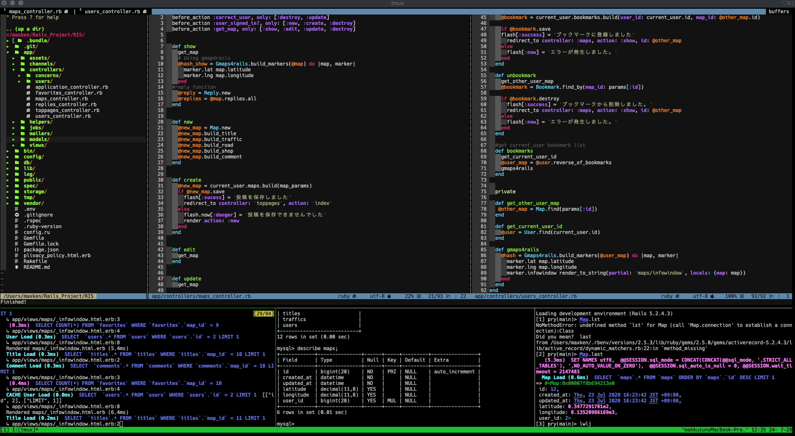

ものづくり大好き:ソフト編
学生時代にMinecraftというゲームでブロックをPythonを使って自動で積み上げる簡単なプログラムを作って以来ハマってます。現在ではRuby on Railsを利用したWebサービスを開発・運用しております。

Vimでの開発風景


初めまして、薦田顕(こもだ けん）と申します。 ソフト・ハード関係なくものづくり大好きです。 目の前の課題・問題を自分の知識や経験で解決することが大好きです。
学生時代にMinecraftというゲームでブロックをPythonを使って自動で積み上げる簡単なプログラムを作って以来ハマってます。現在ではRuby on Railsを利用したWebサービスを開発・運用しております。
Vimでの開発風景
物心ついた頃から周りの物を分解・修理・破壊する等、ものいじりが大好きでした。現在でもパソコン自作したり、自転車整備、ゲーム機など日用品の改造・修理等しております。
自転車の組み立て風景
自転車、ドライブ、カメラ、料理...など多趣味で、学生時代は自転車でヨーロッパのアルプス地方を中心に放浪してました。人生の目標はヨーロッパアルプスの峠全制覇です。現在の進歩率は2%ぐらいです。まだまだ遠い道のりです。
アルプスツーリングでの1枚
〜中学までは、ブラジル、国内、シンガポールを転々とする
2013年
- 洛南高等学校卒
2018年
- 立命館大学経営学部卒
※在学中に1年間ドイツのJulius-Maximilians-Universität Würzburgに留学
2019年
- 株式会社小田原エンジニアリング 営業部(在職)
これから
ものづくりに関わりたいと思い、製造業の営業に新卒で入社しました。しかし、ものづくりに間接的に関わる営業よりも、直接自分で物やサービスを作れるエンジニアになりたいと思っています!!


世界中のサイクリング危険スポットをシェアするサービスです。
RISC!!ユーザーが自転車で走行する上で危険な箇所をGoogle Map上に登録し、登録内容をシェアするサービスです。苦難の連続で回り道しまくりでしたが、ほぼ独力でデプロイまで持っていくことができました。
GitHubリポジトリ
こちら開発期間: 約3ヶ月(現在も開発継続中)
開発環境: Mac OS Catalina, Editor: Vim
使用技術: HTML/CSS/Bootstrap/JavaScript/jQuery/Ruby/Ruby on Rails/MySQL/AWS(EC2にデプロイ)
自分の自己紹介サイト、つまりはこのサイトです。
自分の紹介ページです。自分がどんな人間なのかを理解して頂けるように意識して作成しました。技術的にはフレームワークに一切頼らないで記述しました。楽しかったのですが、フレームワークの偉大さが非常によくわかりました。
GitHubリポジトリ
こちら開発期間: 約5日
開発環境: Mac OS Catalina , Editor: Vim / Windows 10 (Windows Subsystem for Linux Ubuntu) , Editor: Vim
使用技術: HTML/CSS/JavaScript/GitHub Pagesにて公開

失敗から学ぶをコンセプトにしたSNSサービスです。
Fehler失敗から学ぶをコンセプトにしたSNSサービスです。失敗の本質という本を読んだ時に、みんなの失敗が見れるサイトがあったら面白いなと思い、作りました。
GitHubリポジトリ
こちら開発期間: 約2週間
開発環境: AWS Cloud9, Editor: Cloud9
使用技術: HTML/CSS/Bootstrap/Ruby/Ruby on Rails/MySQL/Heroku
入力した複数の候補をランダムに1つだけ選択するアプリです。日々の選択が面倒なので作りました。
ランダムちゃん記念すべき初めて作成した簡単なアプリです。入力した複数の候補をランダムに1つだけ選択するアプリです。おぼえたてのRailsを使いたくて作りました。日々の選択が面倒なので作りました。
GitHubリポジトリ
こちら開発期間: 約2日
開発環境: AWS Cloud9, Editor: Cloud9
使用技術: HTML/CSS/Bootstrap/Ruby/Ruby on Rails/MySQL/Heroku